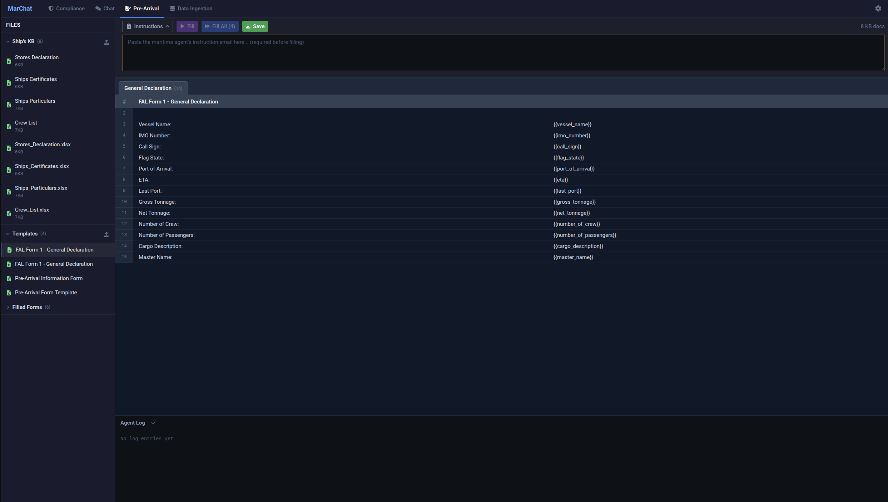
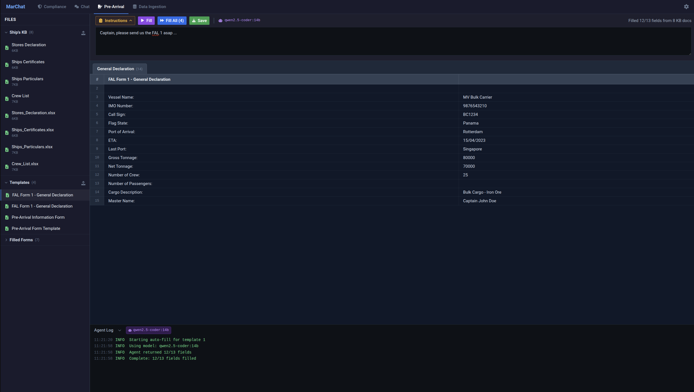

MarChat
AI-powered pre-arrival form automation for maritime operations
MarChat is a delivered product built for a maritime operator. It automates the filling of pre-arrival port documentation using a tool-calling LLM agent with local-first inference and cloud fallback. Source code is available under Apache 2.0.
Pre-arrival documentation — FAL forms, ISPS declarations, health declarations, customs manifests — is a recurring burden for every port call. MarChat eliminates manual data entry by reading source documents (crew lists, stores declarations, certificates) and using an AI agent to fill Excel, DOCX, and PDF templates automatically.
The system runs on commodity hardware with no cloud dependency. All processing stays on the shipboard network via Ollama. An optional Anthropic Claude fallback provides resilience when local inference is unavailable.
Tool-Calling Agent
- Multi-turn agent loop (up to 5 iterations)
- 5 tools: vessel profiles, source docs, PDF extraction, field schema, submit values
- Automatic fallback to JSON prompt if tool-calling fails
Template Engine
- Excel (.xlsx), Word (.docx), PDF form templates
{{placeholder}}field detection- Batch fill all templates with SSE progress streaming
Ship's Knowledge Base
- Upload crew lists, certificates, stores declarations
- Vessel profiles with reusable ship particulars
- Context injected automatically into agent prompts
Local-First
- All inference via Ollama — no data leaves the vessel
- Optional Anthropic Claude fallback for resilience
- Runs on standard shipboard hardware
How It Works
The auto-fill pipeline follows a straightforward workflow:
- Upload source documents — crew lists, stores declarations, certificates, any reference material
- Upload form templates — Excel/DOCX/PDF files with
{{placeholder}}fields - Provide instructions — voyage details, port of call, ETA, agent email context
- Agent fills forms — the LLM reads source docs via tools, maps data to template fields, calls
submit_field_values - Download results — individually or as a batch .zip archive
Provider Fallback Chain
In auto mode (default), the system tries providers in order until one succeeds:
| Step | Provider | Method |
|---|---|---|
| 1 | Ollama (qwen2.5:14b) | Native tool-calling |
| 2 | Anthropic (Claude) | Tool-calling with format conversion |
| 3 | Best available | Single-shot JSON prompt fallback |
Screenshots
Pre-Arrival workspace — blank template with field placeholders:
Filled form after agent auto-fill with tool call log:
Architecture
| Component | Technology | Role |
|---|---|---|
| Frontend | Next.js 14, React, Tailwind CSS | Single-page pre-arrival workspace |
| Backend | FastAPI, SQLAlchemy, Python | API, agent loop, template engine |
| Database | SQLite | Templates, profiles, filled forms |
| LLM (primary) | Ollama (qwen2.5:14b) | Tool-calling agent, form filling |
| LLM (fallback) | Anthropic (Claude) | Cloud fallback when Ollama unavailable |
| Documents | openpyxl, python-docx, pypdf | Template parsing and filling |
Agent Tools
| Tool | Purpose |
|---|---|
get_template_fields |
Read field schema from a form template |
get_vessel_profile |
Retrieve stored vessel particulars |
read_source_document |
Read extracted text from a source document |
extract_pdf_text |
Extract text from a PDF file |
submit_field_values |
Submit completed field-value mapping (terminal) |
LLM Providers
MarChat supports two LLM providers with automatic format conversion between them:
Ollama (Local)
Default provider. Uses qwen2.5:14b for tool-calling and gemma3:12b for general chat. All data stays on-device.
Anthropic (Cloud)
Optional fallback. The AnthropicProvider converts Ollama-format tool schemas and messages to Anthropic's API format transparently. Responses are converted back to the same internal format, so the agent loop is provider-agnostic.
Tool schemas: Ollama
{type: "function", function: {name, parameters}} ↔ Anthropic {name, input_schema}Messages:
role: "tool" ↔ Anthropic tool_result content blocks with tool_use_id matching
API Reference
Forms API
/api/forms/templates/upload
Upload an Excel/DOCX/PDF form template. Returns extracted fields.
/api/forms/fill/auto
Auto-fill a template using the tool-calling agent. Accepts template ID, context text, vessel profile ID, and source document IDs.
/api/forms/fill/batch
Batch auto-fill multiple templates. Returns SSE stream with real-time progress events.
/api/forms/sources/upload
Upload a source document (crew list, stores declaration, etc.) for agent context.
/api/forms/filled/{id}/download
Download a filled form.
/api/forms/filled/download-batch?ids=1,2,3
Download multiple filled forms as a .zip archive.
Settings & Health
/health
Returns Ollama and Anthropic status. Healthy if either provider is available.
/api/settings
Current configuration: models, provider mode.
Installation
Docker Compose
# Pull required Ollama models
ollama pull qwen2.5:14b
# Start services
docker compose up -dFrontend: http://localhost:3005 — Backend: http://localhost:8005
Dev Mode
bash launch.shConfiguration
| Variable | Default | Description |
|---|---|---|
OLLAMA_BASE_URL |
http://localhost:11434 |
Ollama API endpoint |
TOOL_CALLING_MODEL |
qwen2.5:14b |
Model for the tool-calling agent |
ANTHROPIC_API_KEY |
(none) | Anthropic API key for cloud fallback |
LLM_PROVIDER |
auto |
auto, ollama, or anthropic |